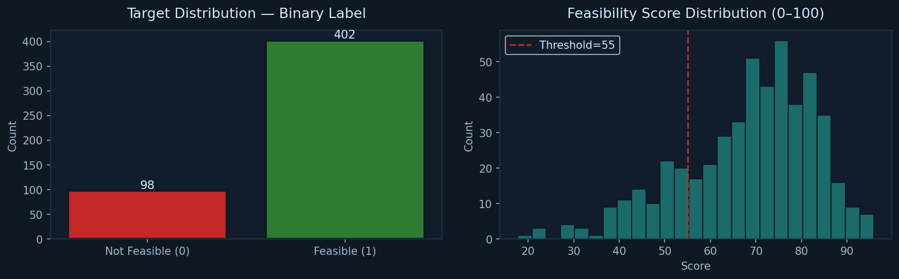
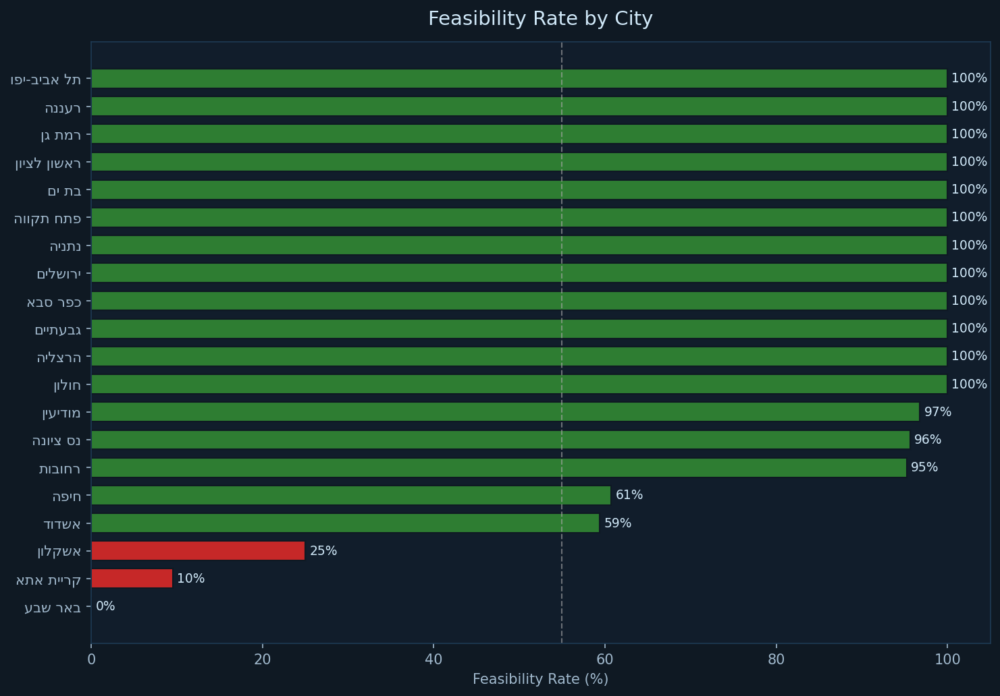
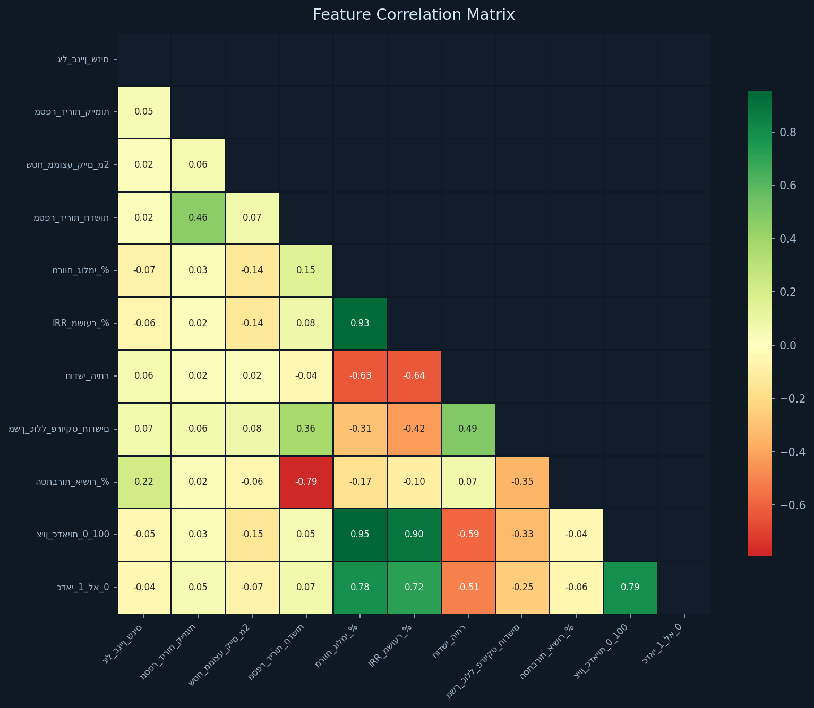
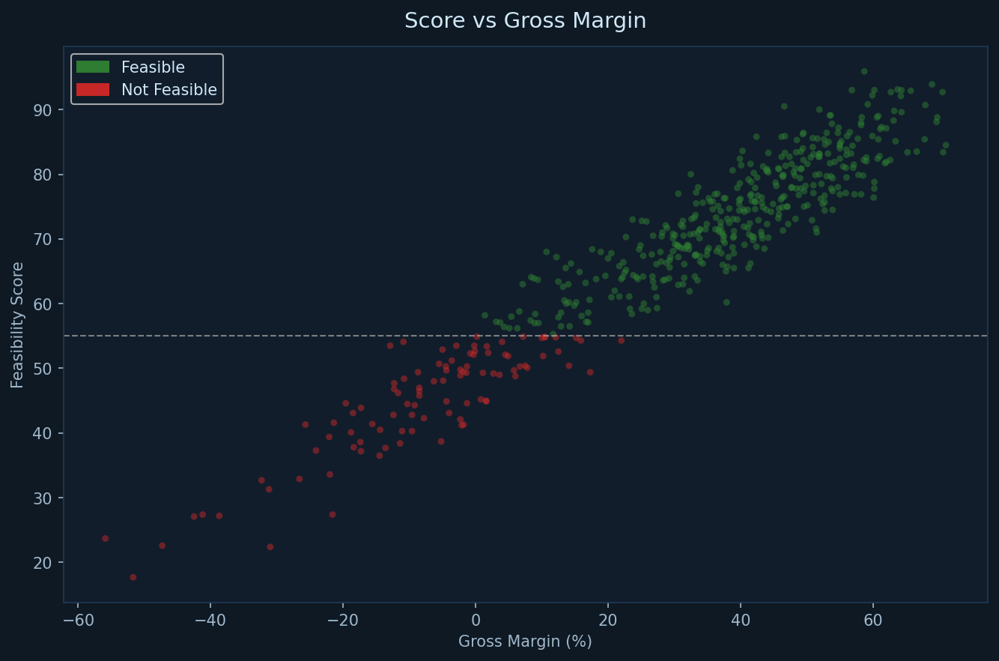
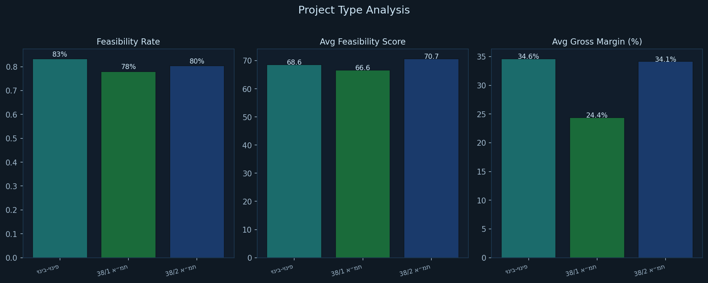

פרויקט למידת מכונה לניתוח כלכלי של עסקאות תמ"א 38 ופינוי-בינוי בישראל
| מודל | AUC-ROC | Accuracy | CV-AUC (5-fold) | הערה |
|---|---|---|---|---|
| Logistic Regression Best | 0.9913 | 0.9400 | 0.9889 | נבחר אוטומטית |
| Random Forest | 0.9863 | 0.9500 | 0.9904 | |
| XGBoost | 0.9881 | 0.9600 | 0.9837 | |
| Gradient Boosting | 0.9612 | 0.9700 | 0.9627 |
| מודל | RMSE | R² | הערה |
|---|---|---|---|
| Ridge Best | 4.250 | 0.9178 | נבחר אוטומטית |
| Random Forest Reg | 4.614 | 0.9032 | |
| Gradient Boosting Reg | 4.705 | 0.8993 | |
| XGBoost Reg | 4.757 | 0.8971 |





סרטון שיווקי — בקרוב
הסרטון יכלול הדגמה מלאה של האפליקציה:
הזנת פרמטרים · ציון כדאיות · הסברי SHAP · ניתוח רגישות
פרויקט זה פותח כחלק מקורס פרויקט מעשי בלמידת מכונה, סמסטר קיץ תשפ"ה, הקריה האקדמית אונו.
מפתח: שקד עקריש | מנחה: ד"ר איל זינגר
הכלי מדגים שניתן לבנות מערכת ML פרקטית לשמאות נדל"ן בעלויות פיתוח נמוכות. הוא משמש כ-pre-screening — מסנן פרויקטים לא כדאיים לפני שמוקדשים להם משאבי תכנון יקרים.